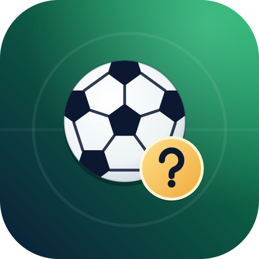
כדורגלן
Kaduraglanמאות שאלות אמיתיות על כדורגל ישראלי ועולמי, ממונדיאל 2026 ועד ליגת העל. מסע חידות, אתגר יומי, הישרדות וראש בראש עם חברים.
הורד 16 פעמים כל המספרים
התקנה באייפון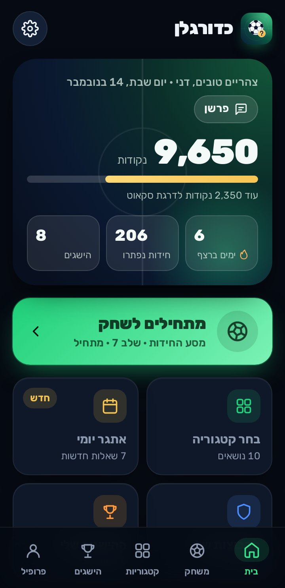
מה חדש
גרסה 1.02- "מי אני?": כל הרמזים מופיעים כבר מההתחלה, לא רק אחרי שעונים
- מסע החידות: כשלא עוברים שלב, או משחקים בו שוב, מקבלים 5 שאלות חדשות במקום אותן שאלות שכבר ראית את התשובות שלהן. הנקודות על התשובות הנכונות נשמרות
- רמז 50:50 חדש, פעם אחת בכל משחק: מוחק 2 תשובות שגויות (בסידור לפי השנים מציב את הראשון), והשאלה שווה חצי מהנקודות
- דילוג אחד בכל משחק, בכל המצבים: בלי נקודות, לא שובר את הרצף, ובהישרדות לא מוריד חיים
- בראש בראש לכל שחקן רמז ודילוג משלו
עובד בלי אינטרנט
- כל השאלות, כל מצבי המשחק וספריית הכדורגל שמורים בטלפון ועובדים גם בטיסה, בחניון או בלי חבילת גלישה.
- ההתקדמות, הנקודות, ההישגים והשיאים נשמרים רק בטלפון, ואפשר לגבות אותם לקובץ.
- ראש בראש עם חברים עובד על טלפון אחד, בלי חיבור.
- התמונות שמוסיפים (סמלים, שחקנים, אצטדיונים) נשמרות בטלפון ומכווצות כדי לא למלא את הזיכרון.
- באנדרואיד, שליחת האפליקציה לחבר כקובץ עובדת בלי אינטרנט. באייפון, אחרי ההוספה למסך הבית, כדורגלן נפתח ועובד בלי אינטרנט.
כשיש חיבור, האפליקציה מורידה לבד שאלות חדשות ותיקונים, בלי למחוק שום דבר קיים, ובודקת אם יצאה גרסה חדשה.
התקנה באנדרואיד
- מורידים
לוחצים "הורדה לאנדרואיד" למעלה. הקובץ kaduraglan.apk יורד לטלפון.
- מתקינים
פותחים את הקובץ מההתראות או מתיקיית ההורדות. בפעם הראשונה מאשרים "התקנה ממקור לא ידוע".
- משחקים
פותחים את כדורגלן ולוחצים "מתחילים לשחק". אין הרשמה ואין שאלות פתיחה.
אם מופיעה אזהרה של Google Play Protect על אפליקציה לא מוכרת, בוחרים להתקין בכל זאת. זה קורה בכל אפליקציה שלא הורדה מחנות Google Play.
התקנה באייפון
באייפון פותחים את כדורגלן מהאתר ומוסיפים אותו למסך הבית. מקבלים סמל כמו של כל אפליקציה, הוא נפתח במסך מלא ועובד גם בלי אינטרנט.
לוחצים על הכפתור באייפון, והקישור נפתח בספארי. גולשים מהמחשב? סורקים את הקוד עם המצלמה של האייפון.
luach-sport.github.io/kaduraglan/app
- פותחים בספארי
דרך הכפתור או הקוד שכאן. אם הקישור נפתח בתוך וואטסאפ או טלגרם, קודם פותחים אותו בספארי.
- לוחצים על שיתוף
כפתור השיתוף (ריבוע עם חץ למעלה) נמצא בתחתית המסך. באייפון עם גרסה חדשה הוא בתפריט ••• שליד שורת הכתובת.
- "הוספה למסך הבית"
גוללים קצת למטה ברשימה ובוחרים "הוספה למסך הבית" (Add to Home Screen), ולוחצים "הוספה".
- פותחים ממסך הבית
מעכשיו פותחים את כדורגלן מהסמל שבמסך הבית. באפליקציה עצמה יש את אותו הסבר, למקרה הצורך.
ההתקדמות בספארי ובאפליקציה שבמסך הבית נשמרת בנפרד, לכן מוסיפים למסך הבית לפני שמתחילים לשחק. אם מוחקים את כדורגלן ממסך הבית, ההתקדמות נמחקת איתו, אז כדאי לשמור גיבוי מדי פעם (פרופיל ← גיבוי ושחזור ההתקדמות).
- עדכונים: נכנסים לבד. כשיש אינטרנט הגרסה החדשה והשאלות החדשות יורדות ברקע.
- שיתוף עם חברים: שולחים קישור לאתר הזה. שליחת האפליקציה כקובץ (APK) היא לאנדרואיד בלבד.
- גיבוי: נפתח תפריט השיתוף של האייפון, ושם בוחרים "שמירה בקבצים", וואטסאפ או מייל.
בית
המסך הראשון: איפה אתם עומדים, וכפתור אחד שמתחיל לשחק.
- הדרגה והנקודותמאוהד מתחיל ועד היכל התהילה. הפס מראה כמה נשאר לדרגה הבאה.
- ימים ברצףכמה ימים ברציפות שיחקתם. יום בלי משחק מאפס את הרצף.
- המשך את המשחק האחרוןמופיע כשמשחק נסגר באמצע. ממשיכים בדיוק מאותה שאלה.
- מתחילים לשחקפותח את השלב הבא במסע החידות.
- קיצוריםבחר קטגוריה, אתגר יומי, הקבוצות שלי, ההישגים שלי, ספריית הכדורגל והגדרות.
משחק: 8 מצבים
בוחרים איך לשחק. כל המצבים עובדים בלי אינטרנט.
- מסע החידותשלבים של 5 שאלות שנעשים קשים יותר. 3 תשובות נכונות פותחות את השלב הבא, 5 מתוך 5 נותנות 3 כוכבים. כל נסיון בשלב מביא שאלות חדשות.
- אתגר יומי7 שאלות חדשות כל יום, אותן שאלות לכל השחקנים. מקבלים ניקוד ×1.5 פעם אחת ביום.
- הישרדות3 חיים ושעון של 20 שניות. הקושי עולה כל 4 שאלות.
- ראש בראש2 עד 4 שחקנים על טלפון אחד. כל סיבוב באותה רמה לכולם, ובסוף לוח תוצאות.
- אתגר לפי קבוצהשאלות רק על הקבוצה שבחרתם, למשל ברצלונה או מכבי חיפה.
- משחק חופשיבוחרים קטגוריות, רמות קושי, סוג חידה, קבוצות ומספר שאלות.
- זיהוי תמונה וחצי סמלזיהוי שחקנים, אצטדיונים, חולצות וסמלים (חצי, רבע, זום או אפור). נפתחים כשיש בטלפון לפחות 4 תמונות מהסוג.
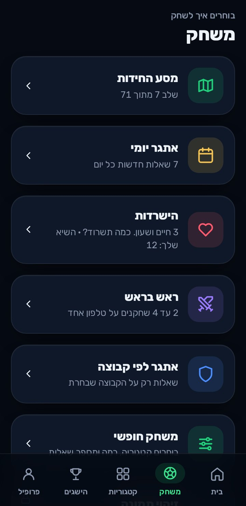
מסך השאלה
שאלה אמריקאית, נכון או לא נכון, "מי אני?" עם כל הרמזים על המסך, סידור אירועים לפי השנים, וזיהוי תמונה.
- רמת הקושי והקטגוריה6 רמות: מתחיל, אוהד, מתקדם, מומחה, אגדה ובלתי אפשרי. למעלה רואים גם כמה נקודות אפשר לקבל.
- רמז 50:50פעם אחת בכל משחק: שתי תשובות שגויות נמחקות (בסידור לפי השנים, הפריט הראשון מוצב לבד). השאלה שווה אז חצי מהנקודות.
- דילוגפעם אחת בכל משחק, בכל המצבים. השאלה עוברת בלי נקודות, לא שוברת את הרצף ובהישרדות לא מורידה חיים. בראש בראש לכל שחקן רמז ודילוג משלו.
- אחרי התשובהרואים אם צדקתם, את התשובה הנכונה, הסבר קצר, את המקור ואת תאריך הבדיקה.
- יש כאן טעות?כל שאלה אפשר לדווח. הדיווח מגיע למפתח ונשמר גם בטלפון.
נתון שמשתנה, כמו מספר חולצה, מסומן "נכון לנובמבר 2026" ומתעדכן בעדכוני השאלות.
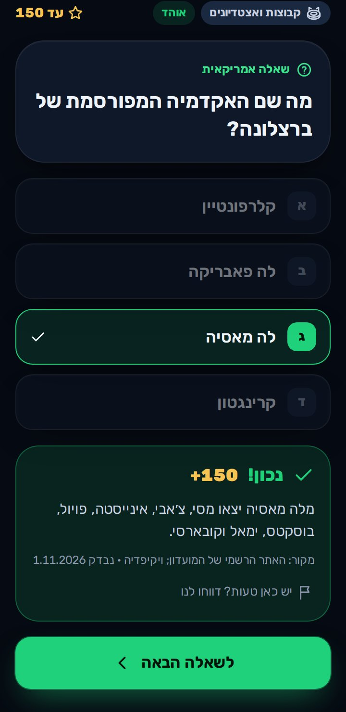
התוצאה
כמה נקודות צברתם, כמה כוכבים בשלב, שיאים חדשים, וכל שאלה עם התשובה הנכונה.
- נקודות לסך הכלשאלה שנפתרה לראשונה נותנת את כל הנקודות. שאלה שכבר פתרתם נותנת 10%, כך שאי אפשר לצבור בלי סוף.
- רצף ומהירותמהתשובה השלישית ברצף מקבלים בונוס, ובמשחקים עם שעון תשובה מהירה שווה יותר.
- לא עברת?הנקודות על התשובות הנכונות נשמרות, ו"לנסות שוב" מביא 5 שאלות אחרות. אחרי שהתשובות הוצגו, אותן שאלות לא חוזרות.
- השלב הבא / עוד משחקממשיכים מיד.
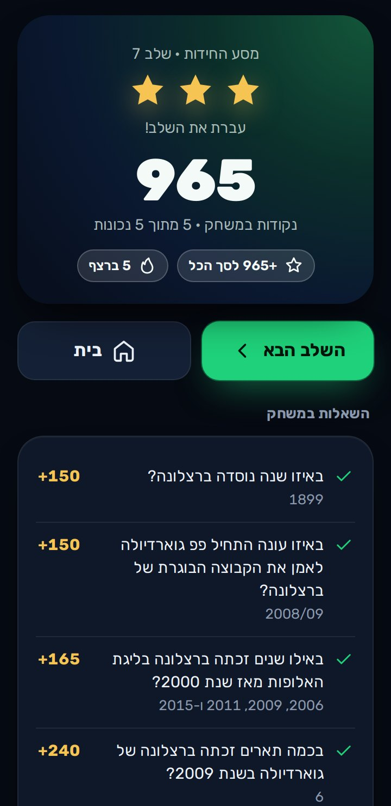
קטגוריות
כדורגל ישראלי, גביע העולם, נבחרות ואליפויות, ליגת האלופות, הליגות הגדולות, שחקנים, קבוצות ואצטדיונים, מאמנים, שיאים ומספרי חולצות.
- בכל קטגוריהכמה שאלות יש, כמה פתרתם ואחוז ההצלחה שלכם.
- לחיצה על קטגוריהפותחת משחק חופשי עליה: בוחרים רמה ומספר שאלות.
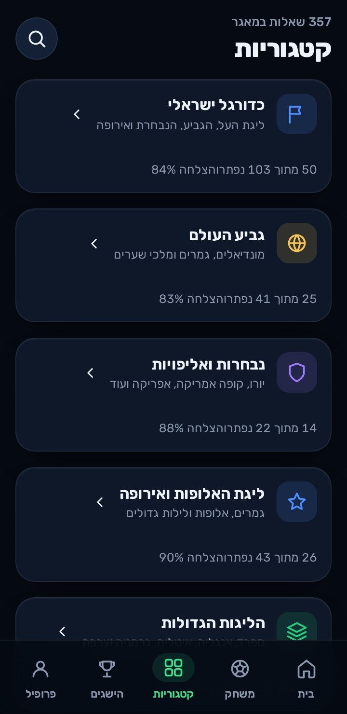
הישגים ופרופיל
הישגים שנפתחים פעם אחת ונשארים, והסטטיסטיקות האישיות שלכם.
- הישגים10 ברצף, 100 חידות, כחול-לבן, בלתי אפשרי? אפשרי, שבוע של אתגרים, ראש בראש ועוד.
- פרופילמשחקים, חידות שנפתרו, אחוז הצלחה, שיאים, קבוצות ושחקנים שזיהיתם, הקטגוריה החזקה וזו שכדאי לחזק.
- גיבוי ושחזור ההתקדמותשומרים קובץ עם כל הנקודות וההישגים. נפרד לגמרי מעדכוני השאלות.
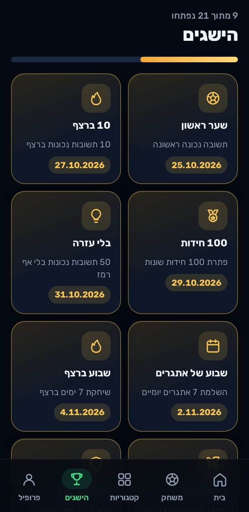
ספריית הכדורגל
חיפוש בעברית או באנגלית בין קבוצות, שחקנים, נבחרות, תחרויות ואצטדיונים, גם בלי אינטרנט.
- סינוןלפי סוג, מדינה ותקופה (שנות ה-2000, ה-2010 וה-2020).
- כרטיסהעובדות שבמאגר: שנת הקמה, עיר, אצטדיון, קבוצות בולטות ועוד. מוצג רק מה שנבדק.
- שאלות על…כשיש מספיק שאלות, מתחילים משחק רק עליהן.
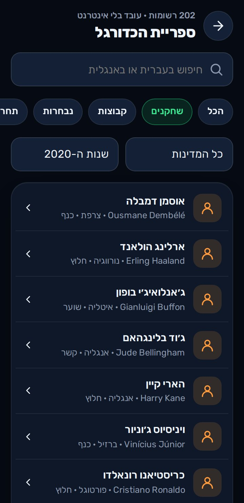
שאלות חדשות ועדכונים
המאגר גדל בלי להתקין את האפליקציה מחדש, ושום עדכון לא מוחק את מה שכבר יש.
- בדיקת עדכוני שאלותכשיש אינטרנט האפליקציה בודקת לבד ומוסיפה חבילות חדשות. אפשר גם ללחוץ ולבדוק עכשיו.
- ייבוא חבילת עדכוןקובץ ZIP או JSON מהטלפון, בלי אינטרנט. כל קובץ נבדק בסכום ביקורת, וחבילה פגומה נדחית בשלמותה.
- תוצאות הייבואכמה שאלות נוספו, כמה עודכנו, וכמה רשומות נדחו ולמה. ייבוא חוזר של אותה חבילה לא יוצר כפילויות.
- גיבוי ושחזור המאגרלפני כל ייבוא נשמר גיבוי אוטומטי, ואפשר לחזור אליו. אפשר גם לשמור גיבוי מלא לקובץ.
- יומן ומספריםגרסת המאגר, תאריך העדכון האחרון, כמה שאלות בכל קטגוריה ובכל רמה, ויומן העדכונים.
כל שאלה מזוהה במזהה קבוע. שאלה קיימת משתנה רק כשחבילה אומרת זאת במפורש, וההתקדמות שלכם בה נשמרת.
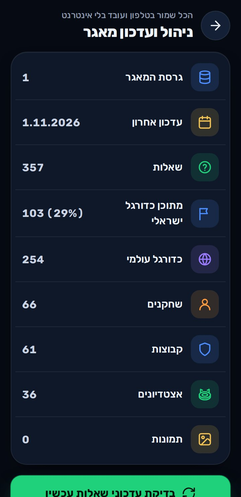
מצב עורך ותמונות
הוספה ועריכה של שאלות ותמונות ישר מהטלפון. הכניסה בקוד גישה (הקוד ההתחלתי 2026, ואפשר לשנות אותו).
- הוספת שאלהשאלה אמריקאית או נכון / לא נכון, עם הסבר, משפט עזרה, קבוצות ומקור.
- עריכת שאלה קיימתהשאלה מקבלת גרסה חדשה. אפשר גם להשבית שאלה עד שתתוקן.
- תמונות חסרותרשימה של כל הסמלים, השחקנים, האצטדיונים והחולצות שחסרים. בוחרים תמונה מהגלריה, והאפליקציה מכווצת אותה (בערך 30–120KB) ויוצרת ממנה לבד שאלת זיהוי.
- שאלות שדווחוכל הדיווחים על טעויות, עם כפתור תיקון.
- ייצוא השינוייםכל מה שהוספתם כחבילת עדכון אחת, לחברים או למפתח.
משתמשים רק בתמונות שמותר לכם להשתמש בהן. לכל תמונה נשמרים מקור וזכויות שימוש.
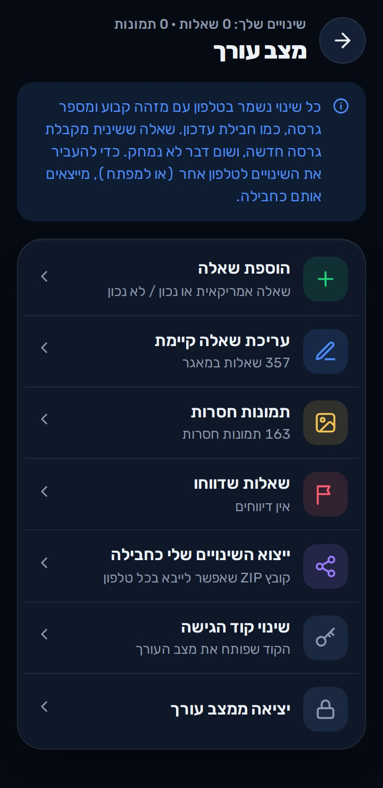
גרסה חדשה של האפליקציה
כשיוצאת גרסה חדשה, קופץ חלון עם רשימה של מה השתנה.
- עדכון עכשיוהאפליקציה מורידה את הגרסה החדשה ופותחת את ההתקנה. כל ההתקדמות והשאלות נשמרות.
- אחר כךסוגר את החלון. אפשר לעדכן מתי שרוצים מההגדרות ← בדיקת עדכונים.
- באייפוןהעדכון נכנס לבד, בלי ללחוץ על כלום.
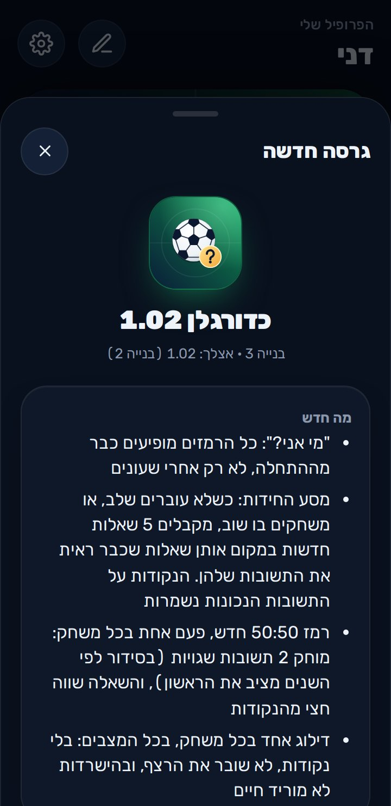
מה מבקשים מכם
לשחק, ולספר לנו מה לא עבד, איזו שאלה לא מדויקת ואיזה נושא חסר לכם.
- איפהפרופיל ← פנייה / הצעת ייעול, או "יש כאן טעות?" בכל שאלה.
- מה ממלאיםסוג הפנייה, שם, מייל ומה רציתם להגיד.
- שליחת הפנייהמגיעה ישר למפתח. אם אין אינטרנט, היא נשמרת ונשלחת לבד כשהחיבור חוזר.
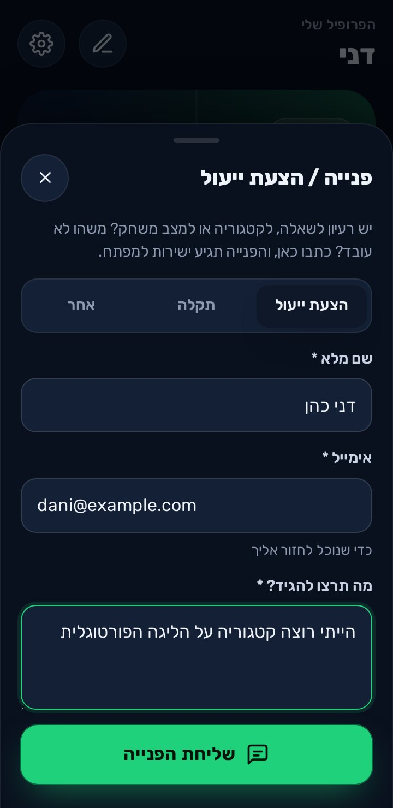
פותח על ידי Itzko
כדורגלן הוא אפליקציה עצמאית של Itzko: בלי פרסומות, בלי הרשמה, וההתקדמות שלכם נשארת אצלכם בטלפון. כל רעיון לשאלה, תקלה או טעות במאגר מגיעים ישירות אליו דרך "פנייה / הצעת ייעול" או כפתור הדיווח שבכל שאלה.